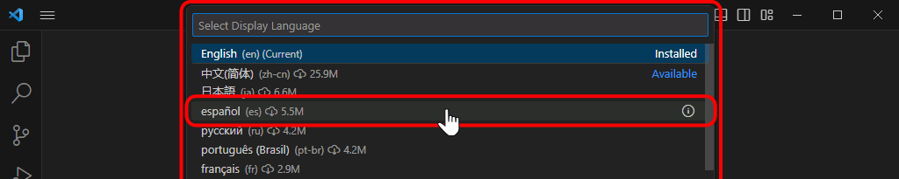
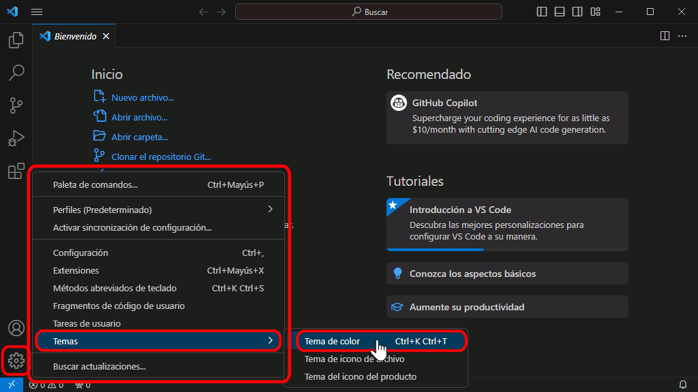
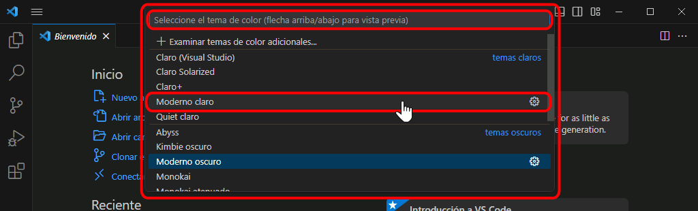
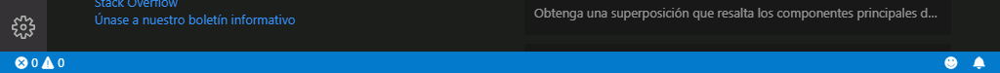
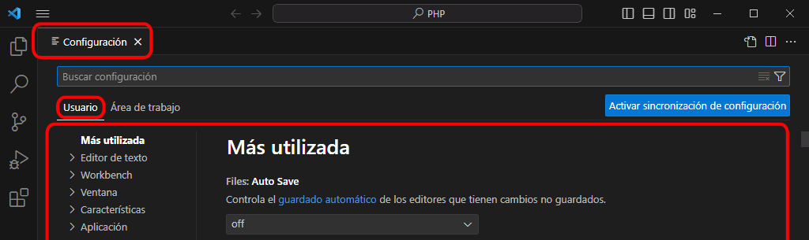
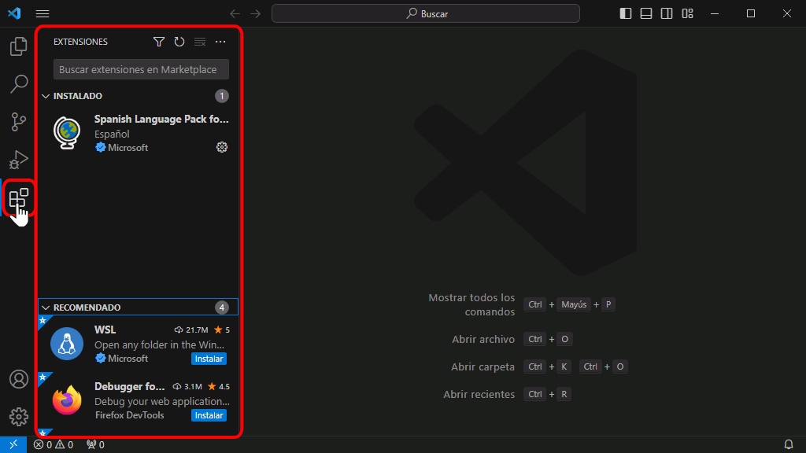
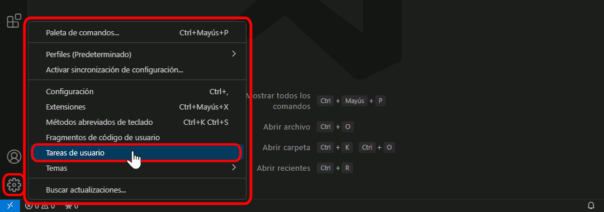
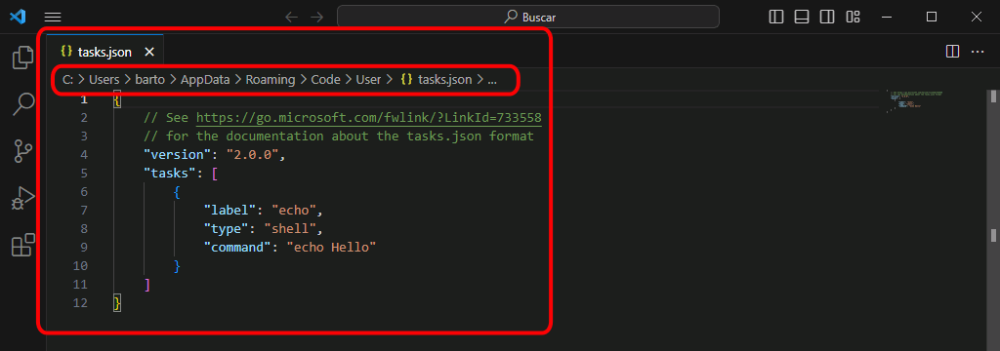
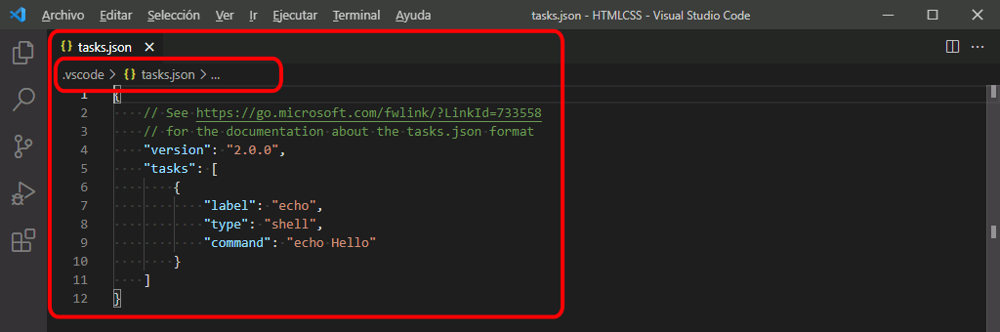
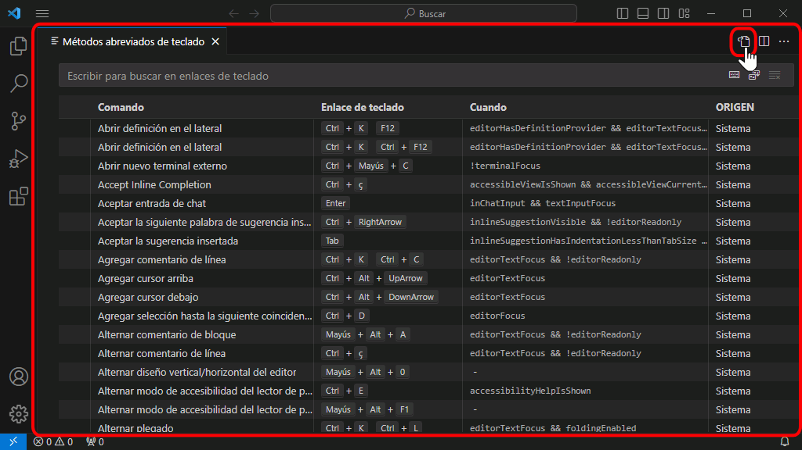

Visual Studio Code puede ser personalizado en muchos aspectos: el aspecto estético, los procesos de trabajo, las herramientas de desarrollo específicas, etc. En esta lección se comenta cómo están organizadas las opciones de personalización, que se encuentran separadas en cinco áreas:
los paquetes de idiomas permiten traducir el interfaz a muchos idiomas, entre ellos el español
los Temas de color permiten personalizar el color y color de fondo de todos los elementos del interfaz
las Áreas de trabajo contienen los archivos con los que trabaja VSC
las Preferencias de configuración permiten especificar de forma detallada el comportamiento de las funciones y herramientas
las Extensiones permiten ampliar las funciones y herramientas disponibles
las Tareas permiten conectar Visual Studio Code con otros programas instalados en el ordenador y automatizar operaciones
los Atajos de teclado permiten acceder fácilmente a las herramientas
Visual Studio Code se instala en inglés, pero se puede cambiar al español instalando el paquete de idioma español (existen paquetes de idiomas para muchos idiomas).
Los pasos a seguir son los siguientes:
Haga clic en el icono de Extensiones de la barra de actividades. Se desplegará la barra de actividades mostrando las extensiones disponibles, ordenadas por popularidad:
Escriba en el cuadro de búsqueda la palabra Spanish. Se mostrarán las extensiones relacionadas:
Haga clic en el botón Install de la barra de actividades o del panel informativo para instalar la extensión.

Una vez instalada la extensión, Visual Studio Code mostrará un aviso indicando que se puede reiniciar para cargar la extensión. Haga clic en un botón Reload o en el botón Yes del aviso.
Al reiniciar, Visual Studio Code mostrará el interfaz en español. En la barra de actividades se mostrará la extensión Spanish Language Pack en el apartado de extensiones habilitadas:
Temas de color de Visual Studio Code
Visual Studio Code incluye varios temas de color, que determinan la combinación de colores con el que se muestran las páginas web o los programas editados (color de fondo, de texto o de los elementos). Los temas de color se clasifican en tres grandes grupos: oscuro, claro y de alto contraste.
El tema de color predeterminado es el tema oscuro llamado Dark+.
Estos son los pasos a realizar para cambiar el tema de color en Visual Studio Code:
Elija la opción de menú Archivo > Preferencias > Tema de color

Se mostrará la lista de temas instalados, con el tema actual resaltado con una franja azul oscura. En esta lista se puede escribir texto para filtrar la lista.
Haga clic en el tema que quiera aplicar. En estos apuntes se utiliza el tema claro Light+:

Inmediatamente, se aplicará el tema elegido:
Áreas de trabajo de Visual Studio Code
El área de trabajo "clásica" de Visual Studio Code es una carpeta y todo su contenido (incluidas subcarpetas). Esa carpeta es la carpeta raíz del área de trabajo.
Para abrir una carpeta (es decir, un área de trabajo "clásica"), elija la opción de menú Archivo > Abrir carpeta ... y seleccione la carpeta que desee como carpeta raíz del área de trabajo.
Para cambiar de área de trabajo, elija la opción de menú Archivo > Abrir carpeta ... y seleccione una carpeta distinta. La opción de menú Archivo > Abrir reciente permite abrir directamente alguna de las últimas áreas de trabajo utilizadas.
Si no hay abierta ningún área de trabajo, la barra de estado de Visual Studio Code se muestra de color morado:
Al abrir un área de trabajo, la barra de estado de Visual Studio Code se muestra de color azul:.

Desde la versión 1.18 (octubre de 2017), Visual Studio Code permite también crear áreas de trabajo que incluyan varias carpetas distintas (y todas las subcarpetas incluidas en ellas).
La opción de menú Archivo > Agregar carpeta al área de trabajo ... permite añadir carpetas al área de trabajo. A continuación se debe guardar el área de trabajo con la opción de menú Archivo > Guardar área de trabajo como .... Posteriormente, las áreas de trabajo se pueden abrir con la opción de menú Archivo > Abrir área de trabajo ...
Preferencias de configuración de Visual Studio Code
Visual Studio Code organiza las preferencias de configuración en dos niveles.
configuración de usuario: estas preferencias se aplican a cualquier documento editado independientemente de su ubicación
configuración de área de trabajo: estas preferencias se aplican únicamente a los ficheros contenidos en una determinada carpeta o en sus subcarpetas
La configuración de área de trabajo debe realizarse para cada área de trabajo y se guarda en una carpeta oculta llamada .vscode que se crea en la carpeta raíz del área de trabajado.
Estos son los pasos a realizar para editar el archivo de preferencias de configuración:
Elija la opción de menú Archivo > Preferencias > Configuración.
Se abrirá una pestaña con las opciones de configuración (Settings). Desde la versión 1.27 (septiembre de 2018), esta ventana muestra las opciones con el aspecto de una página web:
Antes de la versión 1.27, las opciones de configuración se establecían editando directamente el archivo settings.json. Para utilizar el interfaz anterior, haga clic en el botón de tres puntos situado a la derecha y elija la opción "Abrir settings.json":

La ventana se dividirá en dos partes:
en la parte izquierda se muestra el archivo de configuración predeterminado, que no se puede modificar
en la parte derecha se muestra el archivo de configuración de usuario, que sí es editable
si se ha abierto un área de trabajo, en la parte derecha superior se muestra un selector que permite cambiar entre el archivo de configuración del usuario y el del área de trabajo
Este es un ejemplo de modificación del archivo de preferencias de configuración:
La caja de texto superior permite filtrar las opciones de configuración:
Para modificar una configuración, seleccione el valor a modificar en la pestaña izquierda y cópielo en la pestaña derecha...
Modifique el valor de la configuración al valor deseado. Recuerde que las configuraciones deben estar separadas por comas. Mientras no se guarde el archivo, se muestran indicadores en la pestaña y en la barra de actividades.
Guarde el archivo.
Una vez guardado el archivo, se aplicarán las configuraciones establecidas.
Extensiones de Visual Studio Code
Las extensiones de Visual Studio Code permiten ampliar las características del editor. Las extensiones están disponibles en la web Visual Studio Code Marketplace. En esta web se pueden buscar extensiones y consultar detalles de las extensiones (características, número de instalaciones, precio, comentarios y valoraciones de los usuarios, ayuda disponible, etc.), aunque la instalación se realiza desde el propio Visual Studio Code.
Instalar extensiones
Estos son los pasos a realizar para instalar extensiones en Visual Studio Code.
Haga clic en el icono de Extensiones de la barra de actividades. Se desplegará la barra de actividades mostrando las extensiones instaladas:

Escriba un término o varios en la caja de texto de búsqueda, y se mostrarán las extensiones relacionadas.
Haga clic en el nombre de la extensión para abrir una pestaña con información detallada. Para instalar una extensión, haga clic en el botón Instalar correspondiente.
Tras unos segundos, se descargará e instalará la extensión. Haga clic en el botón Recargar para activar la extensión.
Tras recargarse, Visual Studio Code mostrará la extensión en la lista de extensiones instaladas.
Tareas de Visual Studio Code
Las tareas de Visual studio Code permiten automatizar el uso de programas ajenos al propio editor. Las tareas se definen por escrito en un archivo (tasks.json) y se pueden invocar a través del interfaz o mediante atajos de teclado. El resultado de la ejecución de las tareas se suele mostrar en la ventana de Terminal.
Estos son los pasos a realizar para crear una tarea en Visual Studio Code.
Elija la opción de menú Terminal > Configurar Tareas.

Se mostrará un cuadro con los distintos tipos de tareas:
Si muestra la opción "echo", es que ya existe el archivo, pero únicamente contiene la tarea de ejemplo. haga clic en esta opción:

Si muestra la opción "Crear archivo tasks.json ...", es que no existe todavía el archivo tasks.json. Haga clic en esta opción:
Si muestra la opción "Others" (como hacía en versiones antiguas de Visual Studio Code), haga clic en ella:

Se mostrará en una pestaña el archivo de tareas tasks.json con una tarea de ejemplo:
Al crearse, este fichero contiene un ejemplo de tarea que simplemente muestra el mensaje "Hello" en el terminal:
{
// See https://go.microsoft.com/fwlink/?LinkId=733558
// for the documentation about the tasks.json format
"version": "2.0.0",
"tasks": [
{
"label": "echo",
"type": "shell",
"command": "echo Hello"
}
]
}
Modifique el contenido del archivo tasks.json con las tareas deseadas.:
El archivo tasks.json se crea en la carpeta .vscode que se crea en el área de trabajo. Esto permite utilizar la tarea en todos los archivos del área de trabajo. Pero si abrimos otro área de trabajo y queremos utilizar la misma tarea tendremos que crear de nuevo la tarea (o copiar el archivo tasks.json).
Utilizar una tarea
Para utilizar cualquiera de las tareas creadas, siga los pasos siguientes:
Abra en una pestaña la página web a la que quiera aplicar la tarea:
Elija la opción de menú Tareas > Ejecutar tarea ....
Se mostrará un cuadro con las tareas disponibles. Haga clic en la tarea que quiera aplicar:
El resultado obtenido depende de la tarea elegida. En el caso de la tarea de ejemplo de las capturas, se abriría en el navegador elegido la página elegida:
Atajos de teclado de Visual Studio Code
Visual Studio Code dispone de un gran número de atajos de teclado para acceder rápidamente a muchas de sus funciones, pero también se pueden crear nuevos atajos de teclado para optimizar los procesos de trabajo..
Estos son los pasos a realizar para crear o modificar atajos de teclado en Visual Studio Code.
Elija la opción de menú Archivo > Preferencias > Métodos abreviados de teclado.
Se mostrará en una pestaña el archivo de atajos de teclado predeterminados de Visual Studio Code. Haga clic en el enlace keybindings.json para abrir el archivo de atajos de teclado de usuario:

Como en el caso de las configuraciones, la ventana se dividirá en dos partes:
en la parte izquierda se muestra el archivo de atajos de teclado predeterminado, que no se puede modificar
en la parte derecha se muestra el archivo de atajos de teclado, que sí es editable
Al crearse, este fichero no contiene ninguna definición:
// Coloque sus enlaces de teclado en este archivo para sobrescribir los valores predeterminados.
[
]
Modifique el contenido del archivo keybindings.json con los atajos de teclado deseados (nuevos o ya existentes):
En la captura anterior se muestran los atajos de teclado que permiten ejecutar las tareas aconsejadas en la lección Configuración recomendada para el curso de HTML y CSS que abren ficheros en Firefox y Chrome. Los atajos asociados serían:
Ctrl+Alt+f, para Abrir en Firefox
Ctrl+Alt+c, para Abrir en Chrome
Tenga en cuenta que el archivo keybindings.json se crea en la carpeta C:\Users\Usuario\AppData\Roaming\Code\User. Por tanto, los atajos de teclados en todas las áreas de trabajo (carpetas). Pero si los atajos ejecutan tareas, como las tareas están definidas en cada área de trabajo, será necesario crear las tareas en las áreas de trabajo en las que se quieran utilizar.